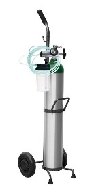

Nuestros Servicios
En Rent a Med, nos complace anunciar una amplia gama de servicios diseñados para satisfacer las necesidades de nuestros pacientes y sus familias. Ofrecemos atención integral a adultos mayores, asegurando un entorno seguro y acogedor.
Entre nuestros servicios destacados, contamos con:
- Cuidado Personalizado: Proporcionamos atención especializada que se adapta a las necesidades individuales de cada paciente, garantizando su bienestar y comodidad.
- Alquiler de Equipos Médicos: Disponemos de una variada selección de equipos médicos, incluyendo camillas, sillas de ruedas y otros dispositivos esenciales, para facilitar la atención y movilidad de nuestros pacientes en el hogar.

Tanque de oxigeno: Equipo esencial para la asistencia respiratoria de nuestros pacientes.

Camilla de hospital: Proporciona comodidad y seguridad en el transporte de nuestros pacientes.
Nuestro compromiso es ofrecer un servicio de la más alta calidad, respaldado por un equipo de profesionales dedicados a promover la salud y el bienestar de los adultos mayores. En Rent a Med, su salud es nuestra prioridad.